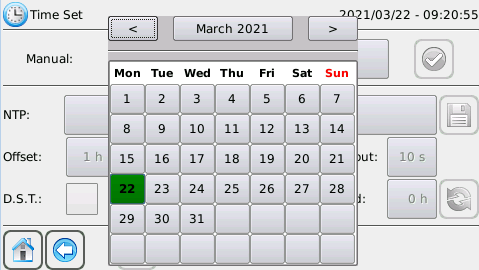

The Time Set page is used to set the date and the time of the system.
It is divided into 2 areas:
In the manual section you can manually set the date and time of the system.
Pressing on the button with the date the calendar will appear


To select the day to be set just press on the desired day.

You can go forward or backward in the months by using the arrows at the top of the calendar, or by pressing the button with the current month you can see all the months of the year.

To change the year you can go forward or backward with the arrows or press the button with the current year and select the desired year.
Pressing the button with the time will display the hours, minutes and seconds selector.

Pressing OK will save the set hours, minutes and seconds.
Cancel cancels the operation.
To confirm the manual date and time change operation press
A confirmation message box will appear when the operation is completed.
In the NTP section it is possible to set the system date and time via NTP, in particular it is possible to set the parameters for enabling the Network Time Protocol, i.e. ntp server, timeout in seconds, offset in hours and period in hours.
The NTP functionality is to be used expressly with the sMily service enabled.
The default NTP server is tempo.ien.it and can be changed using the button:

The time offset sets the time difference and by default is +1 hour (CET). Integer values from -12 to +12 are allowed.

Period sets how many hours the NTP synchronisation should take place, 0h means no synchronisation, the default is 0

The timeout indicates how long (in seconds) the NTP server should wait for a reply, the default is 10

The current settings are saved by

Synchronisation with the NTP server is carried out with the button
Restore the default settings by
A confirmation message box will appear when the operation is complete.